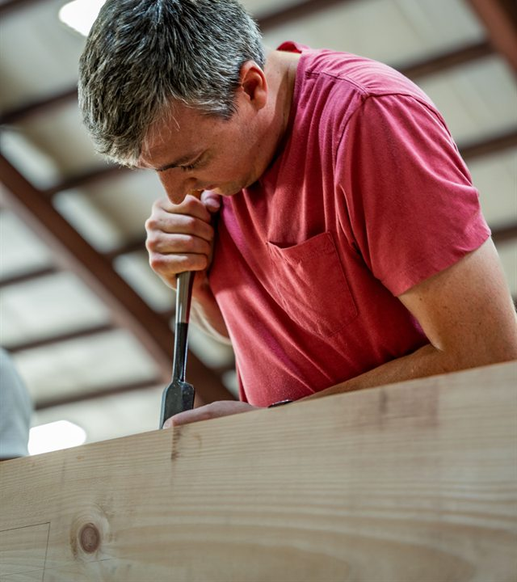

Chief Architect & VP of Research and Development, Ivy Biomedical Systems.
Branford, Connecticut.
Joseph Kerivan Lane is Chief Architect and VP of Research and Development at Ivy Biomedical Systems in Branford, Connecticut, where he leads patient-monitoring development across hardware, firmware, and communication platforms.
He led development of Ivy's MRI-suite patient monitoring platform, engineering the hardware, firmware, and communication interface to deliver best-in-class performance in the high-field, high-noise MRI environment. Working in partnership with a major medical device OEM, he carried the product through design validation and full production release.
Before Ivy he was Director of Engineering at FastCAP Systems, building advanced energy storage and power management systems for Lockheed Martin, NASA, and Halliburton, and served as Principal Investigator on a ~$1M NASA SBIR developing hybrid power systems for cube satellites. He studied electrical engineering at MIT, and got his start at MIT Lincoln Laboratory building a MEMS fast-steering mirror system for precision laser pointing. He holds eleven patents.
His work has ranged across cardiac monitoring, beam steering, and downhole telemetry. The common thread has been hardware and embedded design in challenging environments, and a willingness to work wherever the problem happens to live — physics, algorithms, control, or signal processing.
Eleven granted and pending patents spanning MRI gating and patient monitoring, ultracapacitor construction, downhole telemetry and power generation, and processor-controlled ski bindings. A full list is on Google Patents.
Open to conversations about hard problems — especially the ones that fall between disciplines.